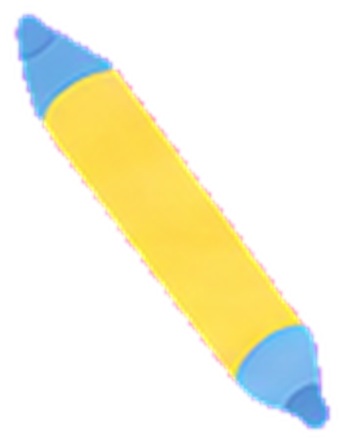
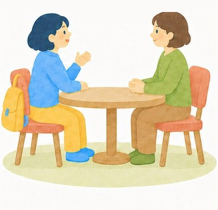

ABOUT THE JOB
キャリアコンサルタントってなに？
ひとことで
中心は

モヤン
サニー先生
PROFILE
このサイトを書いている人
STEP BY STEP
気になることを、ひとつずつ
上から
気に
-
1
取ったら
どんな 働き方が できる？ 働く
場所は、 おもに 5つです。 企業の 中、 学校、 公的機関(ハローワークなど)、 人材会社、 独立・副業。 2022年の 調査では、企業の 中で 結果でした。活動している 人が 41.7%で いちばん 多い 出典: 労働政策研究・研修機構
「第2回キャリアコンサルタント登録者の 活動状況等に 関する 調査」 (2022年) -
2
正直な
話
「最悪の国家資格」って 本当？ ネットで
そう 言われる 理由を 調べてみたら、3つとも 事実 でした。独占業務が ない こと、 費用が かかる こと、 収入の 実態です。 やめた ほうが いい 人も います。 30秒の 診断も あります。 -
3
それでも、
受けてよかったと思うこと資格は
まだ 取っていないので、 「取って よかった」とは 書けません。 でも、 養成講習を 受けて よかった こと なら、 はっきりあります。 - 「聴く」
練習を、 ほぼ 毎週できた。 プライベートでも 仕事でも、 活かせるように なりました。 - 年齢に
関係なく、 仲間が できた。 修了した 今も、 毎週 いっしょに 練習しています。 - 初回は
緊張したけれど、 楽しかった。 協力的な 人ばかりでした。
資格を
取った 7,586人への 調査でも、 約7割が 「資格が 日々の 仕事や 生活に 役立っている」と 答えています。 「自分の 活動に 満足している」人は、 約35%です。 もし
人生が 100年あるのなら、 人を 応援する 。仕事が したい 運営者は そう 思って、 いま挑戦しています。 出典: 労働政策研究・研修機構
「第2回キャリアコンサルタント登録者の 活動状況等に 関する 調査」 (2022年) - 「聴く」
-
4
未経験でも、
何歳からでも できる？ 受験資格に、
年齢の 条件は ありません。 登録している 人は50代が いちばん 、多く 受験する 人の 約9割は、 養成講習から 始めています。 相談の 仕事の 経験が なくても 大丈夫です。 出典: 労働政策研究・研修機構の
2022年の 調査、 厚生労働省 「第31回試験結果の概要」 -
5
-
6
お金は
いくらかかる？ 給付金を
使えば、297,000円の 講座が まで実質59,400円 下がることもあります。 使わない 場合の 初期費用は 35〜50万円前後です。 対象に なるかどうかは、 人に よって 違います。3つ選ぶだけの 目安チェックも あります。 -
7
モヤン
サニー先生
まずは
話を聞いてみよう！
いきなり申し込む
運営者が
運営者が
※ この
この
この
162のことば図鑑
66人の理論家
1152の1問1答
運営者が
WHAT YOU CAN DO
このサイトでできること
キャリアコンサルタントが
BEFORE YOU START
これから資格を考えている方
- キャリアコンサルタントってなに？どんな仕事かを1分で
- キャリコンって何？よくある質問の回答はこちら
- 資格のとり方を知る養成講習→試験→登録の流れと費用
- 養成学校を比較するPR主要6校を24項目で比べました
- 無料説明会はこちらPR運営者が受講した講座の説明会。申し込まなくても参加できます
FOR LEARNERS
いま勉強中・試験前の方
- ことばを調べる162の用語を、図とたとえ話で
- 理論家と出会う66人の理論家を、人物ごとにやさしく
- 1問1答で確かめる1152問の○×・4択で、すきま時間に
- 1分動画で覚えるYouTubeショートを毎日更新
- 直前対策テキスト赤シート対応の問題集(note・有料)
- キャリコン仲間コミュニティ準備中いっしょに学ぶ仲間とつながれる場所を準備しています
LEARN ON A PICNIC
ピクニックしながら学ぶ
草原の


🌳 疲れた